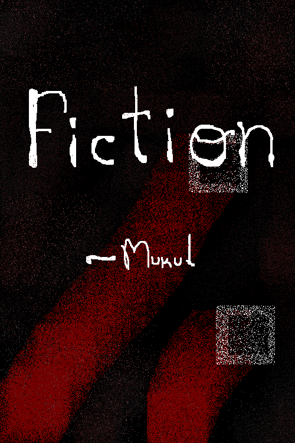
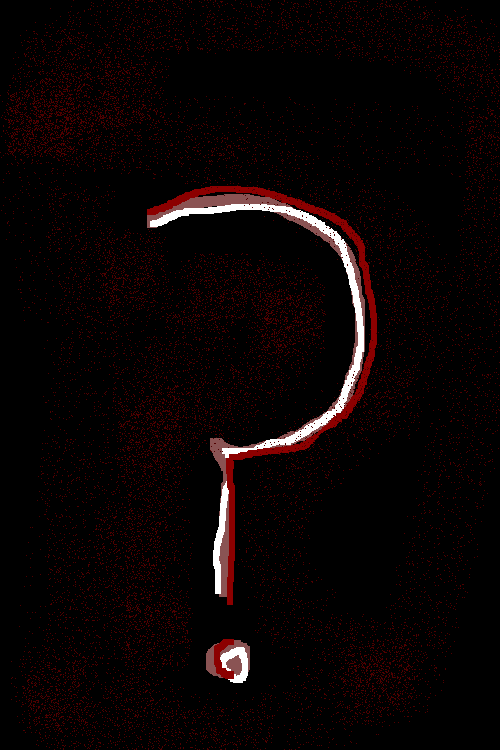

~ A guide to literature
This is your guide to what books you should read.

This is your guide to homemade poems.

This is why and how I create.

Hey! I'm mukul, a 15 year old artist. I work with several art mediums and one of them is literature. It truly intrigues me how symbols can help people say so little with them yet so much at the same goddamn time. To think that whatever i feel at a point in time has been felt before, has been written about before, has always existed before, proving that one can never be truly unheard until and unless they convince themselves.
This website is my contribution to literature, a small gesture as one might argue.
Here, I've talked about books I've read and how hard I recommend them.
A collection of poems that I've written myself.
And, how and why I create literature. My reason for this art form ig.